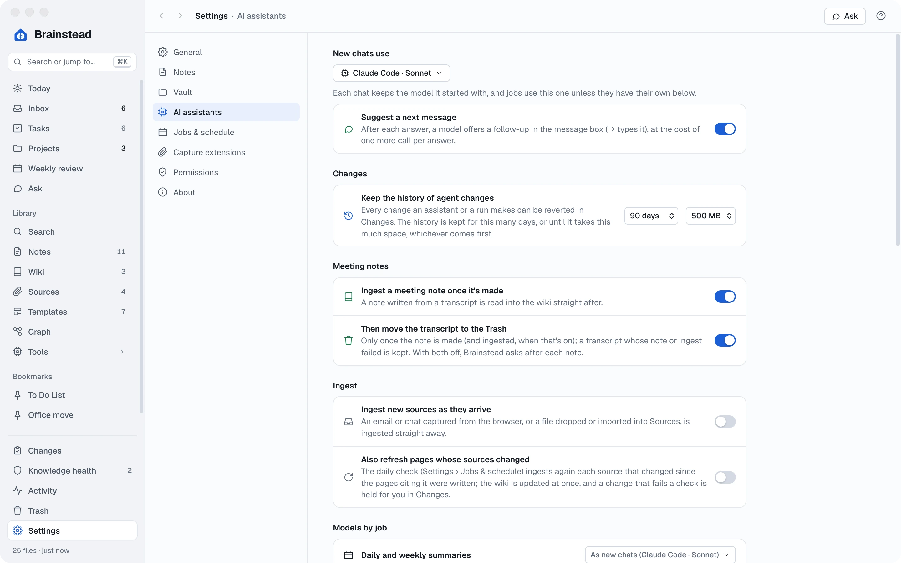
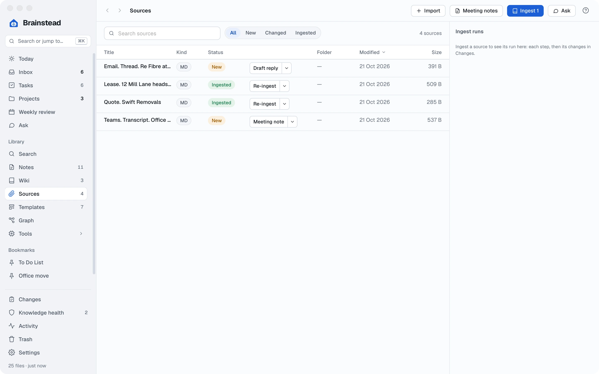
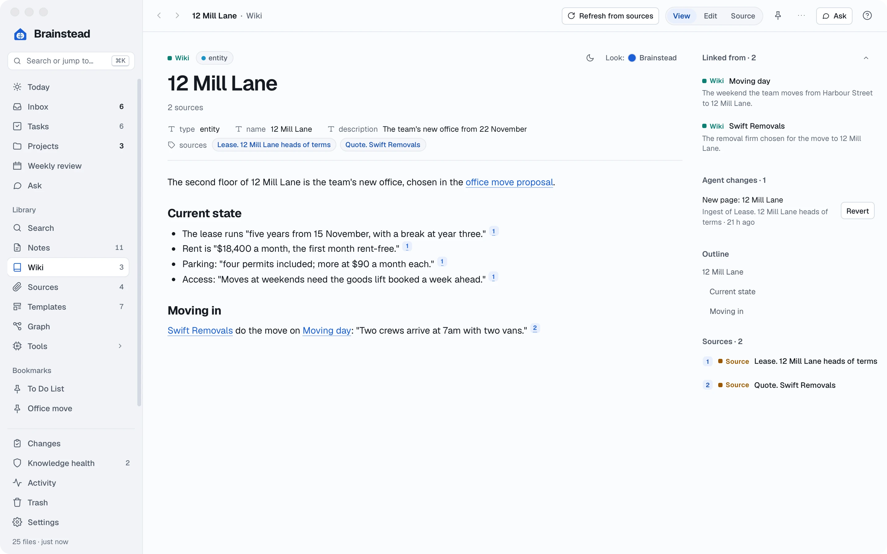
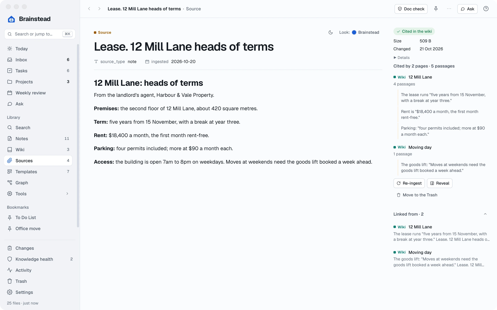
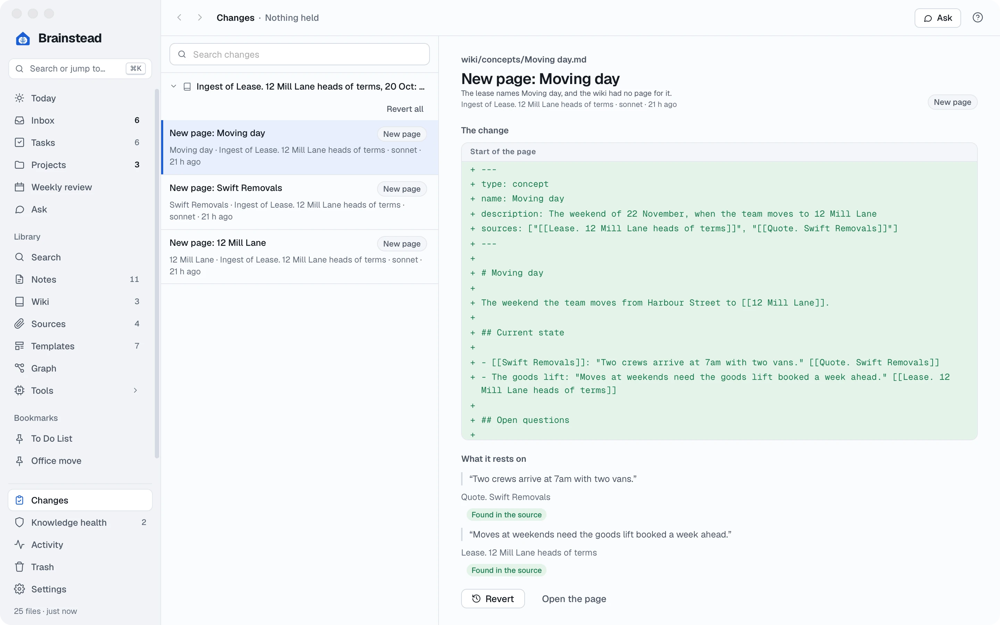
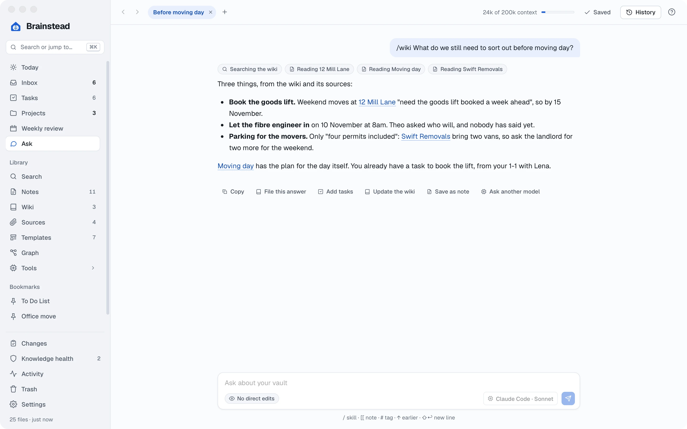
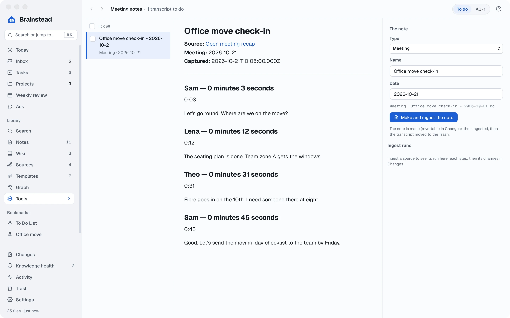
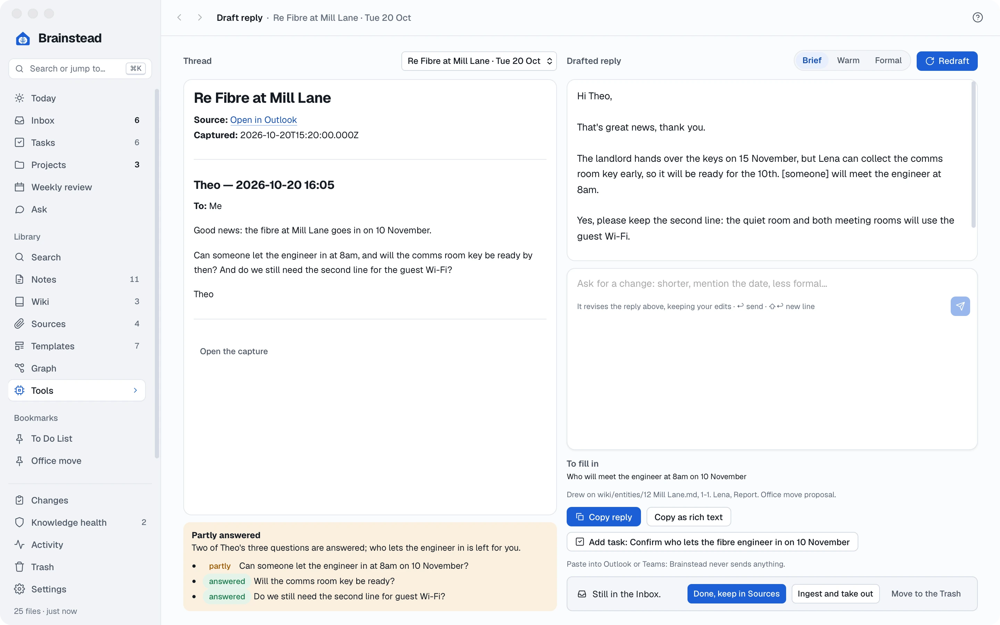

Tutorials › Advanced
Your own wiki.
Written for you.
Let an AI assistant read your documents, emails and meetings, and turn them into a wiki you can check, question and trust.
I'm using a
The keys below follow your choice.
The story so far
The move is four weeks away and the paperwork is piling up: the landlord's lease terms, the removal firm's quote, an email from Theo about the internet connection, and a Teams meeting where everyone gave an update.
The answers you need are in there somewhere. In this tutorial an AI assistant reads it all and keeps a wiki: a page for the new office, one for the removal firm, one for moving day. Every fact on those pages is quoted from where it came from, so you can always check.
- A wikibuilt from your documents
- Answerswith their sources
- A meeting notefrom a transcript
- A replydrafted for you
Connect an assistant.
Brainstead has no AI of its own. It uses an assistant you already have on your computer, signed in with your own account: Claude Code, Codex, GitHub Copilot or Antigravity.
- If you don't have one yet, install one and sign in to it once. Brainstead shows how: open Settings › AI assistants and click How to install beside the one you want.
- Back in Brainstead, click Look again. The assistant appears under Found on this computer.
- Under New chats use, pick the model for your chats. Models by job lets background work, such as building the wiki, use a model of its own.

You stay in charge. An assistant never edits your files itself. It asks Brainstead, which checks each change and lists it in Changes, where you can undo it. Anything risky waits for you to accept it.
Bring in your sources.
A source is anything the wiki is built from: a PDF, a Word or Excel file, a picture, a note, an email or a Teams chat. Sources are kept as they are, in your vault's sources folder.
- Open Sources in the sidebar.
- Drag the lease terms and the removal firm's quote from your desktop onto the window, or click Import and choose them. Each one is marked New.
- To bring in emails and Teams chats in one click, add the browser extensions: open Settings › Capture extensions and follow the steps for Chrome or Edge.
- Then, in Outlook on the web, open Theo's email and click the extension's button. The thread lands in Sources, and in your Inbox.

Build the wiki.
Ingesting a source means the assistant reads it and writes what it learned into the wiki: a new page for each thing that needs one, and updates to the pages that already exist.
- On Sources, click Ingest on the lease's row.
- Watch the Ingest runs pane on the right: it reads the source, plans the pages, writes them and finally checks every quote against the lease.
- Ingest the removal firm's quote the same way.
- Open Wiki in the sidebar. There are new pages for 12 Mill Lane, Swift Removals and Moving day, linked to each other.

Sources change. When the landlord sends new terms, replace the file and click Refresh from sources at the top of the page. Or let the daily check do it for you: switch it on in Settings › AI assistants, under Ingest.
Check its work.
AI can be wrong, so Brainstead makes everything it does easy to check and easy to undo.
- On the 12 Mill Lane page, click a citation number. The lease opens with that passage marked. On the right, Cited in the wiki lists every page that quotes it.
- Open Changes at the foot of the sidebar. Each ingest is listed with every change it made: the new text in green, and under What it rests on, each quote marked Found in the source.
- Don't like a change? Click Revert. Revert all undoes a whole ingest. Both keep any edits you've made since.
- Changes that need your decision wait under Held for you: a quote that couldn't be found, or a change to a template.


Keep it healthy. Knowledge health checks the wiki every time it changes: broken links, missing pages, facts without a source, and pages that disagree with each other. The fixes with one right answer take one click.
Ask your vault.
Now the payoff. Instead of searching through the lease, the quote and your notes, just ask.
- Open Ask with ⌘6.
- Start your question with /wiki, so the answer comes from the wiki and its sources, with the links to check:
/wiki What do we still need to sort out before moving day?
- Press ↩. You can see what it reads as it works.
- Under the answer: Add tasks turns what it found into tasks, Save as note keeps it, and File this answer makes a good answer a wiki page of its own.

Ask about anything you're looking at. The Ask button at the top of most screens starts a chat about that note, project or source. It can answer questions about Brainstead itself, too.
Meetings into notes.
This morning's check-in was on Teams, with a transcript. Rather than write it up, let the assistant turn it into a meeting note from your own template, and add what was said to the wiki.
- Capture the transcript with the Teams extension from the meeting's recap, or drop the transcript file onto Sources.
- Open Tools › Meeting notes in the sidebar and choose the transcript.
- Check The note card: Brainstead has worked out the type, name and date. Change anything marked "check".
- Click Make and ingest the note. The note is written from your Meeting template, with its actions as tasks, then read into the wiki.

Draft a reply.
Theo asked three questions. The assistant can draft the answer from what your vault already knows, and tell you what it couldn't answer.
- In the Inbox, open Theo's email and press D, or choose Tools › Draft reply and pick the thread.
- Choose a tone, Brief, Warm or Formal, and click Draft.
- Read the verdict under the email: which questions are answered. To fill in lists what's left for you, such as who meets the engineer.
- Edit the reply, or ask for a change: shorter, or say Lena will meet him.
- Click Copy reply and paste it into Outlook. Brainstead never sends anything itself. Add task catches the follow-up the reply commits you to.

Work from Terminal.
If you use your assistant in a terminal, give it Brainstead's tools. It can then do almost anything the screens do, from any folder, with the same checks and the same Changes list.
- In Settings › AI assistants, find Brainstead's tools. It shows the command for each assistant it found, with the right path for your computer.
- Click Copy, paste it into Terminal and press ↩. For Claude Code it looks like this:
claude mcp add -s user brainstead -- "…/Brainstead" --mcp
- Start your assistant and ask it something, such as what's left on the office move? or add a task to book the lift for Friday.
Leave it working. An assistant running unattended passes unattended to Brainstead, and every change that fails a check is held for you, not made.
A second brain that shows its work.
The lease, the quote, the email and the meeting are all in one wiki, and every answer can be traced back. You learned to:
- Connect your own AI assistant
- Bring in files, emails and chats
- Ingest sources into the wiki
- Check quotes and revert changes
- Ask questions with /wiki
- Turn transcripts into notes
- Draft replies from your vault
- Use Brainstead from Terminal